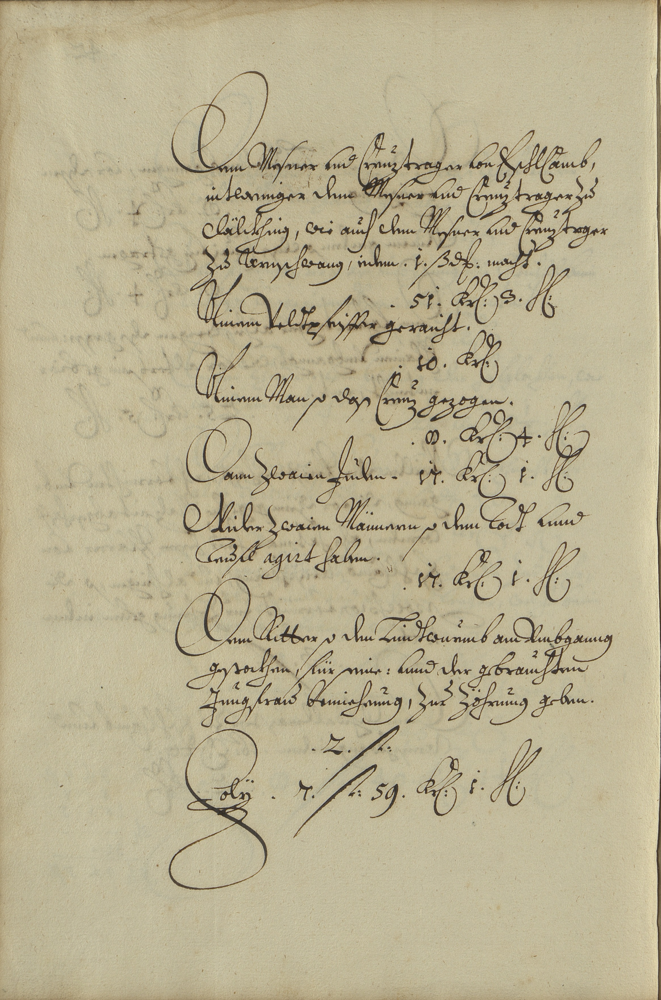

StA Landshut, Kurbayern Geistlicher Rat, Kirchen- und Stiftungsrechnungen Rentmeisteramt Straubing, 249



Kommentar
Editor: magdalena.weileder@textgrid.de
Archiv: StA Landshut
Bestand: Kurbayern Geistlicher Rat, Kirchen- und Stiftungsrechnungen Rentmeisteramt Straubing
Signatur: 249
Ort: Furth im Wald
Datum: 1676
Schlagwort: Amtsbuch
Schwierigkeitsgrad: leicht
Kurzbetreff:
Kirchenrechnung des Pfarrgotteshauses von Furth im Wald über Lohn für Mitwirkende am Drachenstich
Kirchenrechnung des Pfarrgotteshauses von Furth im Wald über Lohn für Mitwirkende am Drachenstich
Schreiberhände:
- (S1)
Kommentar:
In der Kirchenrechnung des Pfarrgotteshauses Unserer Lieben Frau zu Furth sind die Löhne für verschiedene Personen aufgelistet, die 1676 am Further Drachenstich mitgewirkt hatten, dem ältesten bekannten Volksschauspiel, das bis heute jährlich aufgeführt wird.
Die Rechnung ist in schwungvoller Kurrent geschrieben, die Großbuchstaben sind am Zeilenbeginn oft stark vergrößert.
Langes s, das in Ligatur mit o und ch ohne Oberlänge erscheint (z.B. Z. 8: so und Z. 4: Arnschwang) wird auch am Wortende verwendet (Z. 8: das). An der Oberlänge C und K bringt der Schreiber Häkchen bzw. Schleifen an (z.B. Z. 1, 2: Creuztrager, Z. 5, 7: Kr(euzer) ), etwas ungewöhnlich ist die Form des A (z.B. Z. 6: Ainem).
Das lateinischstämmige Wort agirt (Z. 12) ist in humanistischer Kursive geschrieben.
In der Kirchenrechnung des Pfarrgotteshauses Unserer Lieben Frau zu Furth sind die Löhne für verschiedene Personen aufgelistet, die 1676 am Further Drachenstich mitgewirkt hatten, dem ältesten bekannten Volksschauspiel, das bis heute jährlich aufgeführt wird.
Die Rechnung ist in schwungvoller Kurrent geschrieben, die Großbuchstaben sind am Zeilenbeginn oft stark vergrößert.
Langes s, das in Ligatur mit o und ch ohne Oberlänge erscheint (z.B. Z. 8: so und Z. 4: Arnschwang) wird auch am Wortende verwendet (Z. 8: das). An der Oberlänge C und K bringt der Schreiber Häkchen bzw. Schleifen an (z.B. Z. 1, 2: Creuztrager, Z. 5, 7: Kr(euzer) ), etwas ungewöhnlich ist die Form des A (z.B. Z. 6: Ainem).
Das lateinischstämmige Wort agirt (Z. 12) ist in humanistischer Kursive geschrieben.
Entzifferung
(Absatz Beginn)
1 Dem Mesner vnd Creuztrager von EschlCamb,
2 nitweniger dem Mesner vnd Creuztrager Zu
3 Dälckhing, wie auch dem Mesner vnd Creuztrager
4 Zu Arnschwang, iedem .1. ß(olidum)d(enariorum) macht.
5 {tab}{tab}.51. Kr(euzer) 3. h(eller)
6 Ainem Veldtpfeiffergeraicht.
7 {tab}{tab}.10. Kr(euzer)
8 Ainem manso das Creuz gezogen.
9 {tab}{tab}.8. Kr(euzer) 4. h(eller)
10 Dann Zwaien Juden.17. Kr(euzer) 1. h(eller)
11 Wider Zwaien Männern so dem Todt vnnd
12 Teufl agirt haben.
13 {tab}{tab}.17. Kr(euzer) 1. h(eller)
14 Dem Ritterso den Lindtwurmb am Vmbganng
15 gestockhen, für seine: vnnd der gebrauchten
16 Jungfrau bemieheung, Zur Zöhrung geben.
17 {tab}.2. f(lorenos)
18 Folÿ.7. f(lorenos) 59. Kr(euzer) 1. h(eller)
(Absatz Ende)
Transkription
(Absatz Beginn)
1 Dem mesner und creuztrager von Eschlcamb,
2 nitweniger dem mesner und creuztrager zu
3 Dälckhing, wie auch dem mesner und creuztrager
4 zu Arnschwang, jedem 1 s. d., macht:
5 {tab}{tab}51 kr. 3. h.
6 Ainem veldtpfeiffer geraicht:
7 {tab}{tab}10 kr.
8 Ainem man, so das creuz gezogen:
9 {tab}{tab}8 kr. 4. h.
10 Dann zwaien juden: 17 kr. 1 h.
11 Wider zwaien männern, so dem todt unnd
12 teufl agirt haben:
13 {tab}{tab}17 kr. 1. h.
14 Dem ritter, so den lindtwurmb am umbganng
15 gestockhen, für seine unnd der gebrauchten
16 jungfrau bemieheung zur zöhrung geben:
17 {tab}2 f.
18 Folÿ 7 f. 59 kr.1 h.
(Absatz Ende)